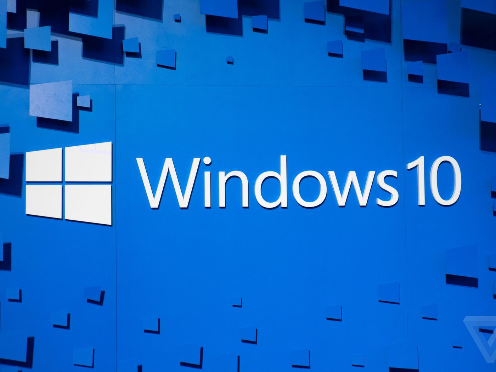

{% extends "base.html" %}
{% block current_app_content %}
    <h1>微軟推 Win 10 更新 大幅提升硬碟效能</h1>
    <br>
    
    <br>
    <h3><a><font color="#000000">微軟 Microsoft 每月都會為 Windows 用戶推送更新，以修補作系統問題，但通常用戶都沒有特別感覺。不過，在即將推出的 5
        月更新，大家可能會感覺系統速度變快，由其是使用傳統硬碟的電腦。</font></a><br>
        <br>
        <a><font color="#000000">據了解，今次的更新是針對 Windows
            搜尋功能而作出改變，日後系統將會更好地辨識高峰使用時間，從而避開搜尋索引的工作，藉此解決硬碟突然高耗用量的問題。此外，當安裝更新後，當用戶傳輸檔案時，系統將會停止索引相關工作，杜絕可能出現的減速問題。
            <br>
            <a><font color="#000000">今次的更新顯然會為傳統硬碟的裝置帶來改善，皆因索引工作是密集而長時間，會導致本身速度已不高的硬碟負載增加，拖慢電腦的效能，即使硬碟並非安裝作業系統亦受影響。據廠方指出，在大量在實機及虛擬機器實驗中均發現，套用更新後電腦的整體速度都會變得更快。<br>
                <br>
            </font></a>
            <br><br>
            <a href="{{ url_for('main.intel10') }}"><font
                    color="#9966ff">{{ _('【相關報道】Intel 十代 Core 正式登場！最高 10 核心‧5.3GHz Turbo 時脈') }}</font></a>
            <br>
            <a href="{{ url_for('main.sm') }}"><font
                    color="#9966ff">{{ _('【相關報道】Samsung 正開發 2 億像素感光元件！預計明年初推出') }}</font></a></h3>
{% endblock %}